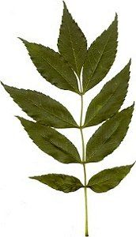

Woher kommt der Name Blasenesche?
  Die Fruchtkapseln sehen aufgeblasen aus.
Die Fruchtkapseln sehen aufgeblasen aus.
Die Blätter sind wie die Blätter der Esche gefiedert. Die Fiederblättchen der Esche sind jedoch gleichmäßig gezähnt.
Auf Englisch heißt die Blasenesche Goldenrain Tree.